Cardiotic AI — full test run
31 Oct 2026 · image cardiotic:0.1.0 (652 MB) · all suites passed
| Suite | Size | What it checks | Result |
|---|---|---|---|
| AI research code (ml) | 32 tests | signal processing, models, measurement rules, site thresholds | PASS |
| Engine (engine) | 37 tests | model integrity, input contract, golden outputs, 6 file formats, site configuration, HTTP | PASS |
| Server (server) | 29 tests | accounts, lockout, roles, CSRF header, upload, review/sign rules, audit chain, HL7/FHIR, MLLP delivery, concurrency | PASS |
| Web app: typecheck + lint | — | TypeScript and ESLint, no errors | PASS |
| Web app: unit | 8 tests | clinical rules, triage, layout helpers | PASS |
| Web app: browser flow, sample build | 2 flows | read, edit calipers, sign, report, audit, roles; Holter, upload | PASS |
| Clean install without containers | smoke test | fresh Python environment, no PyTorch, model verify, server, upload, web app, backup | PASS |
| Docker image as hospitals run it | 9 checks ×3 runs | non-root, read-only, models verified, browser flow (12 screenshots), restart, backup, tampered model refused | PASS |
| Engine = research pipeline (real data) | 800 ECGs + 49,438 beats | PTB-XL, Chapman–Shaoxing, MIT-BIH: identical findings; probabilities within 2×10⁻⁶ | PASS |
Browser flow inside the Docker container — one screenshot per step
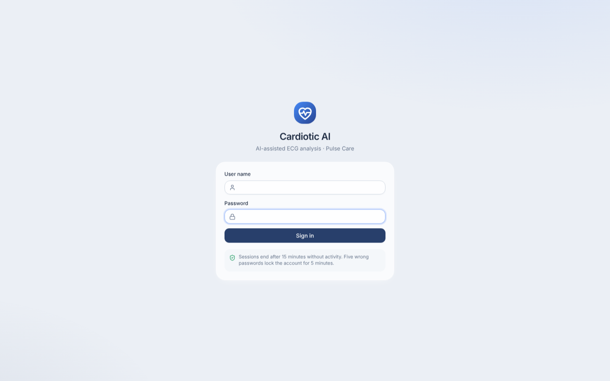
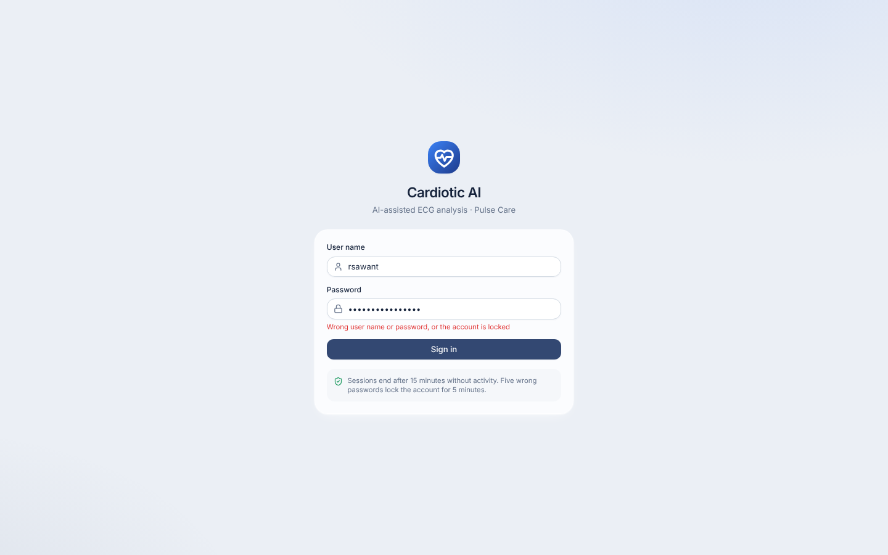
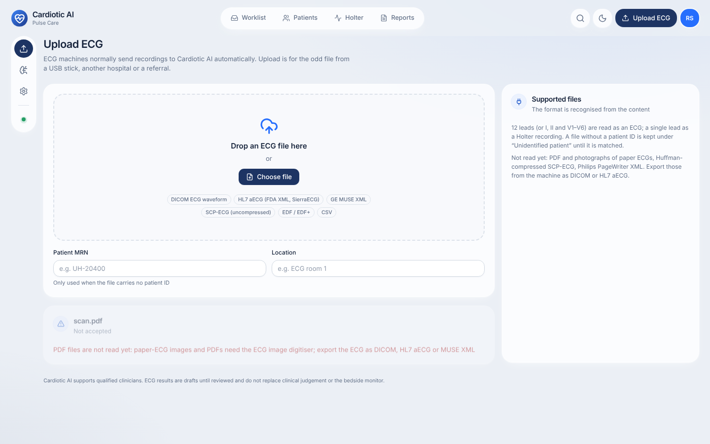
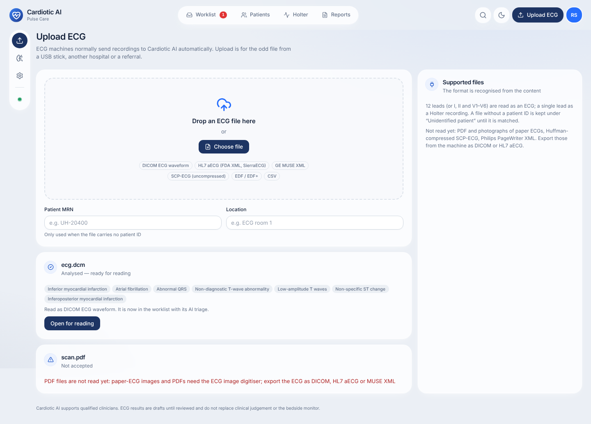
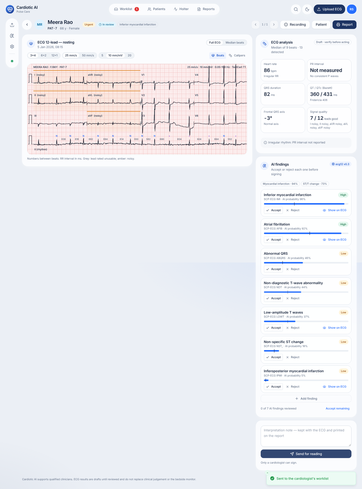
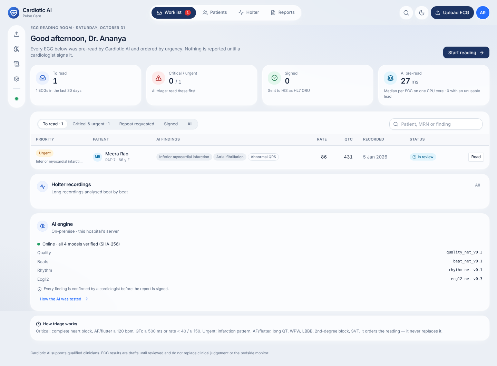
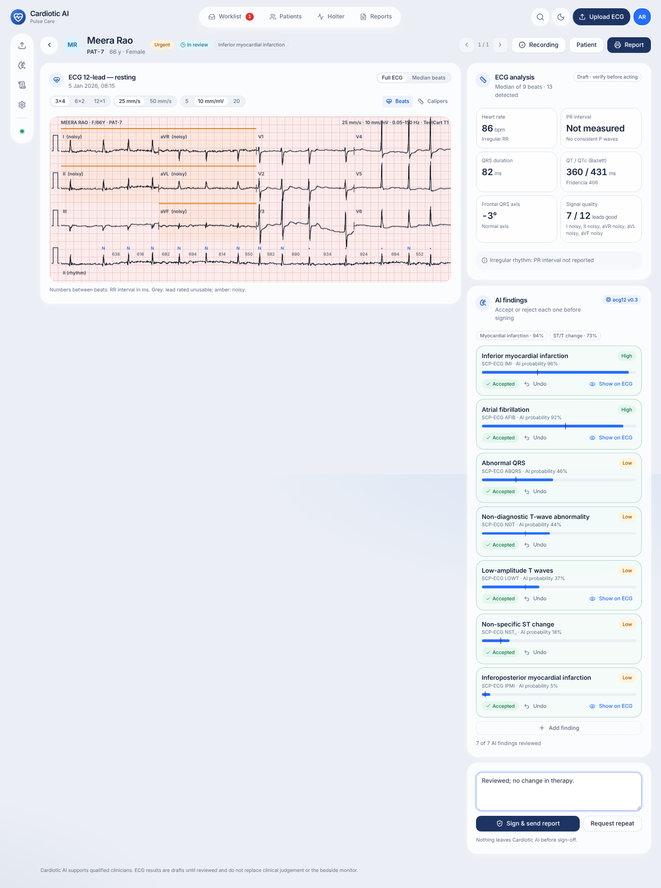
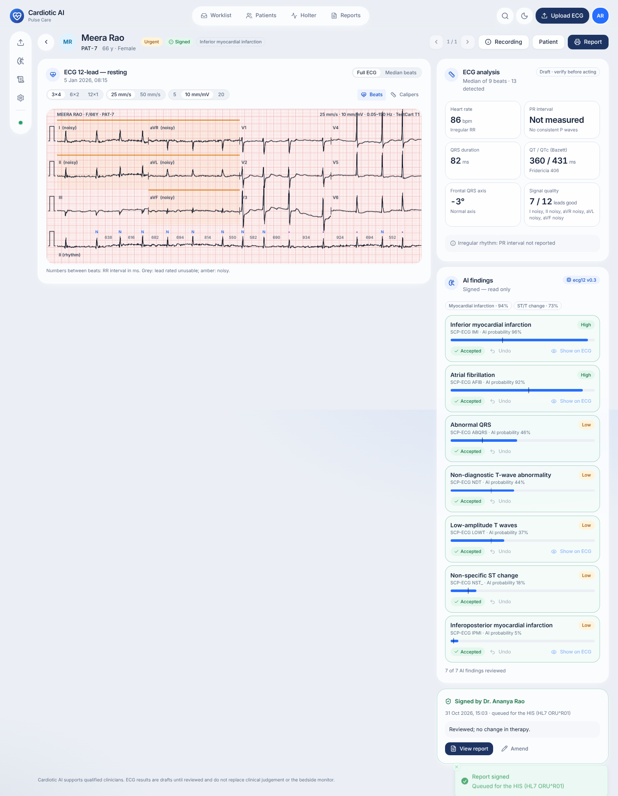
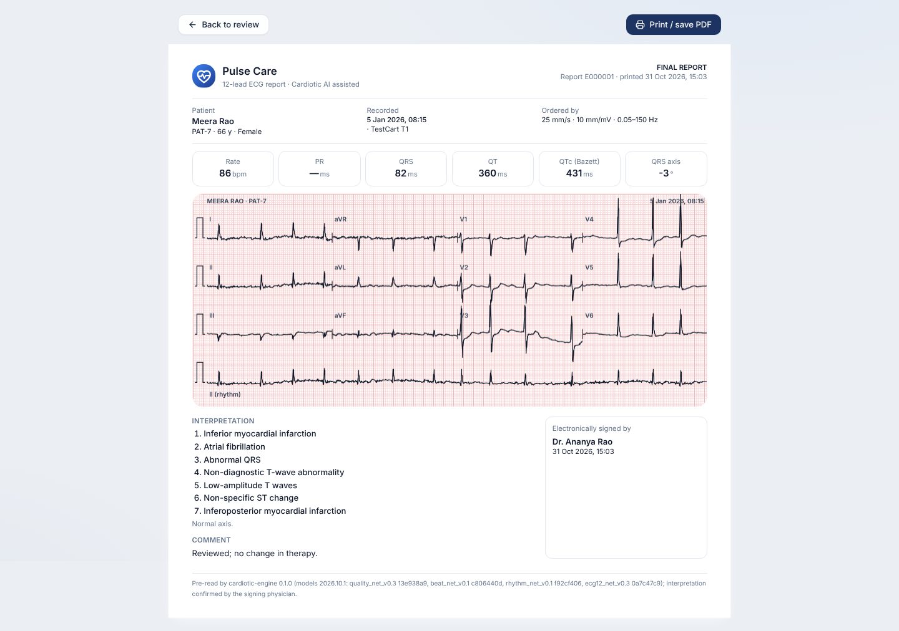
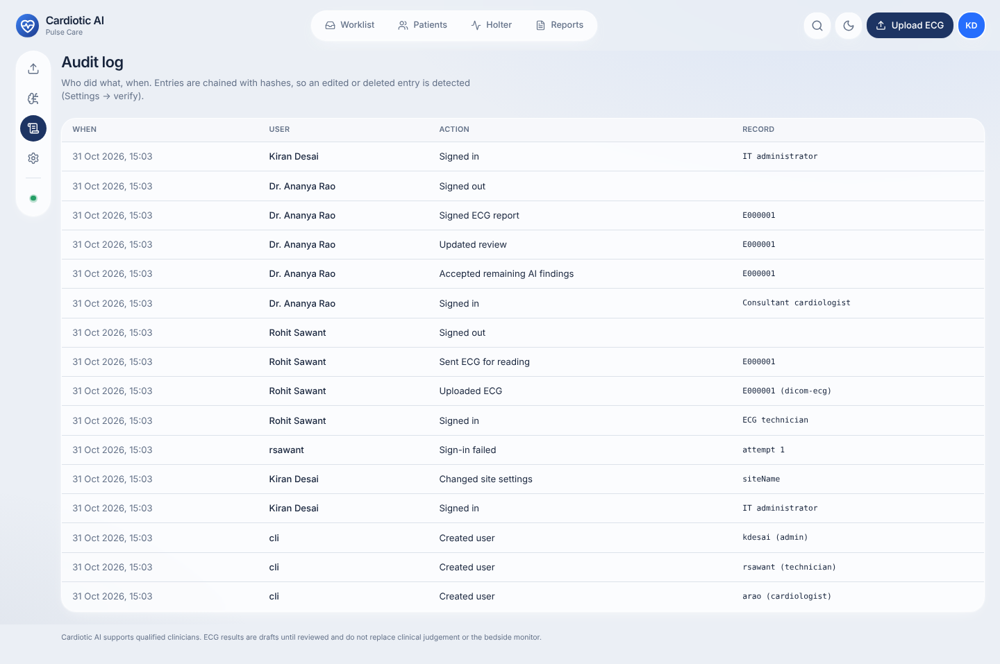
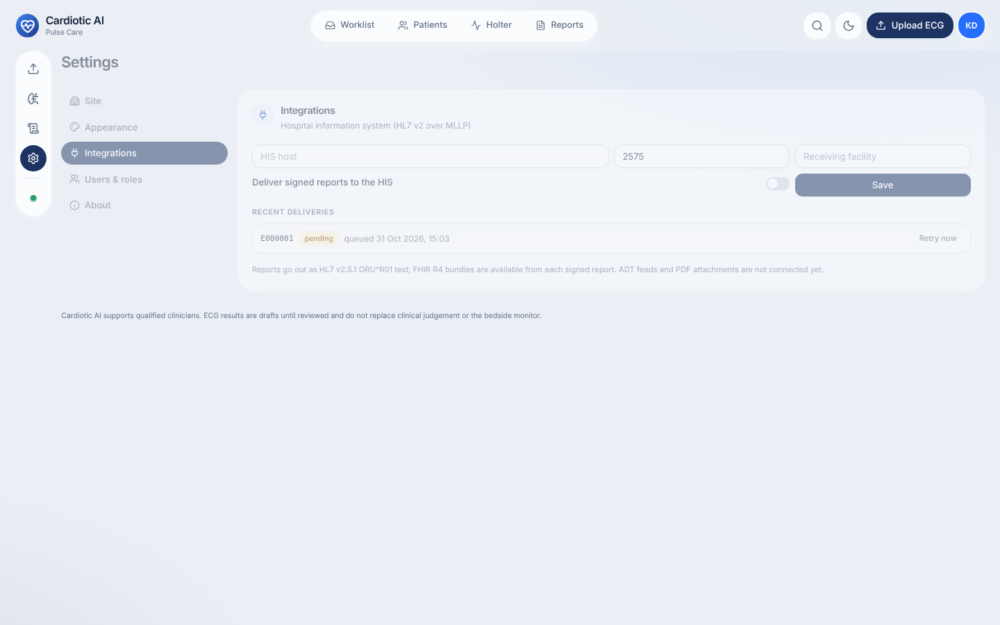
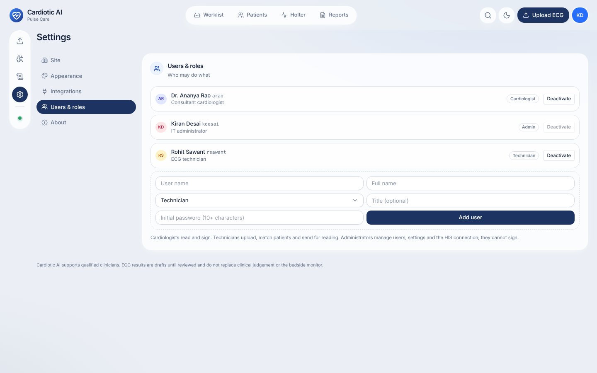